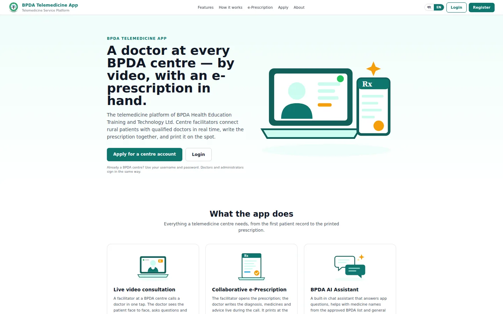

Case study Healthcare · Telemedicine
BPDA Telemedicine App
A production web platform that gives BPDA a modern, trustworthy online presence and lets users reach services quickly on any device.
- Role
- Full-stack web developer
- Stack
- HTML5 · CSS3 · JavaScript
- Status
- Live in production

My role
- Planned and implemented the core pages and user flows
- Added dynamic behaviour with JavaScript
- Structured clean, maintainable UI sections that scale with new content
- Improved responsiveness and usability on desktop and mobile
Business goals
- Establish a professional, trustworthy online presence
- Present services and information clearly
- Give fast access to important resources
- Deliver a consistent experience across devices
Approach
- Requirement analysis and content mapping
- UI structure and component planning
- Responsive styling and visual refinement
- Client-side interaction improvements
- Testing across viewport sizes and browsers
- Deployment and live verification
Challenges & solutions
Rich information without clutter.
Organised content into focused blocks with a clear visual hierarchy.
Working well on every device.
Mobile-first layout adjustments and flexible CSS patterns.
Readability and consistency.
Standardised spacing, typography and section structure across pages.
Key features delivered
- Clean, modern landing experience
- Structured information architecture for easier navigation
- Responsive layout for mobile, tablet and desktop
- Reusable UI patterns for maintainability
- Performance-conscious front-end implementation
Outcome
The BPDA Telemedicine App launched successfully as a production-ready website. It improves BPDA's online presence, accessibility and user engagement through a clean design and a well-structured user experience.